Choć jestem drugim właścicielem samochód i jego historię znam od pierwszego kilometra. Został w zeszłym roku wykupiony z Leasingu i przejechałem nim od wykupu 13 tys. km. Jest w idealnym stanie wizualnym jak i technicznym.
Serwisowany był tylko w autoryzowanych stacjach obsługi VW na co prócz histori w A.S.O. dodatkowo posiadam wydruki w wersji papierowej.
Umożliwiam sprawdzenie w każdej stacji diagnostycznej jak i w A.S.O. VW.
Przy przebiegu 140 tys. km. wymienione sprzęgło a obecnie amortyzatory przód i tył oraz nowe opony wielosezonowe. W samochodzie nigdy nie palono papierosów, wnętrze czyste i zadbane bez rys i przetarć. Lakier (czarny metalic) w idealnej kondycji.
Zapraszam do kontaktu bo watro.
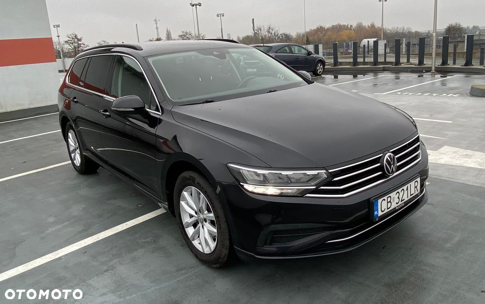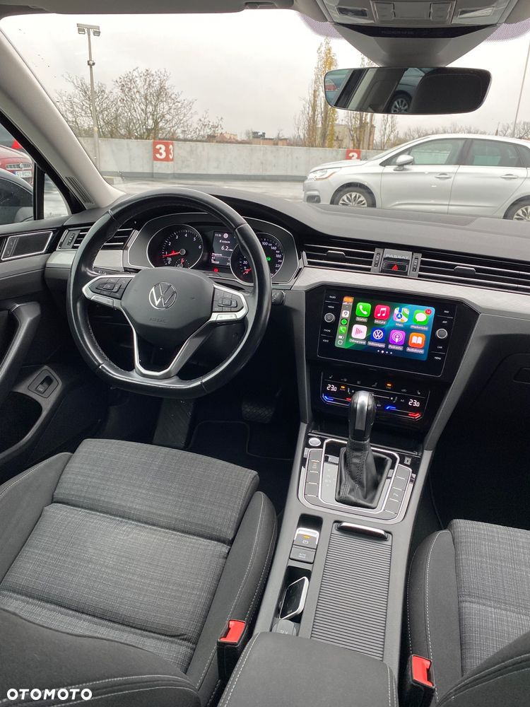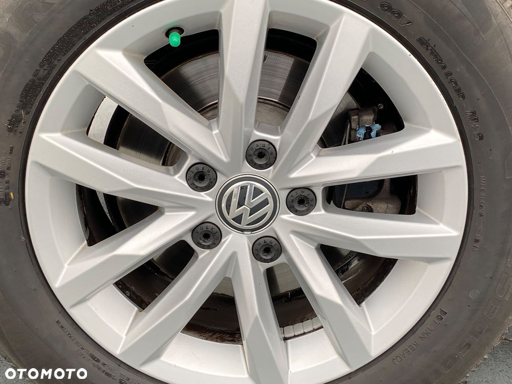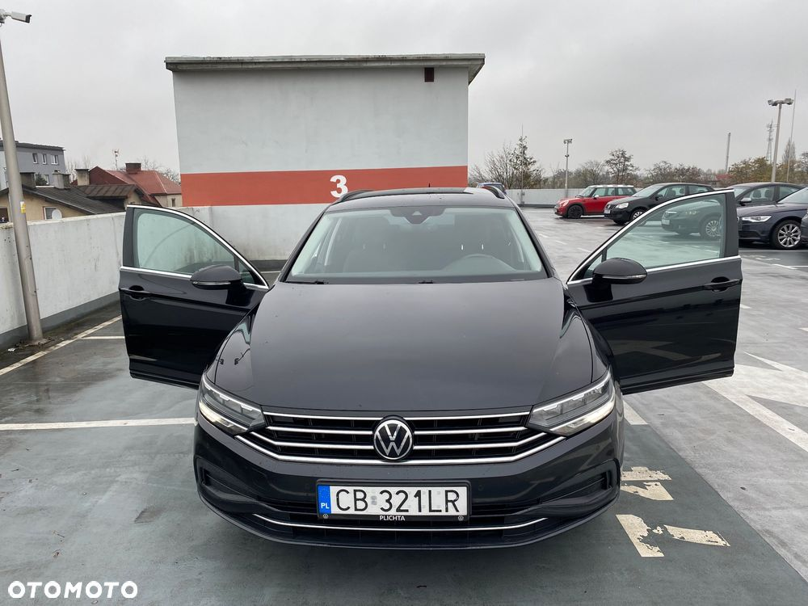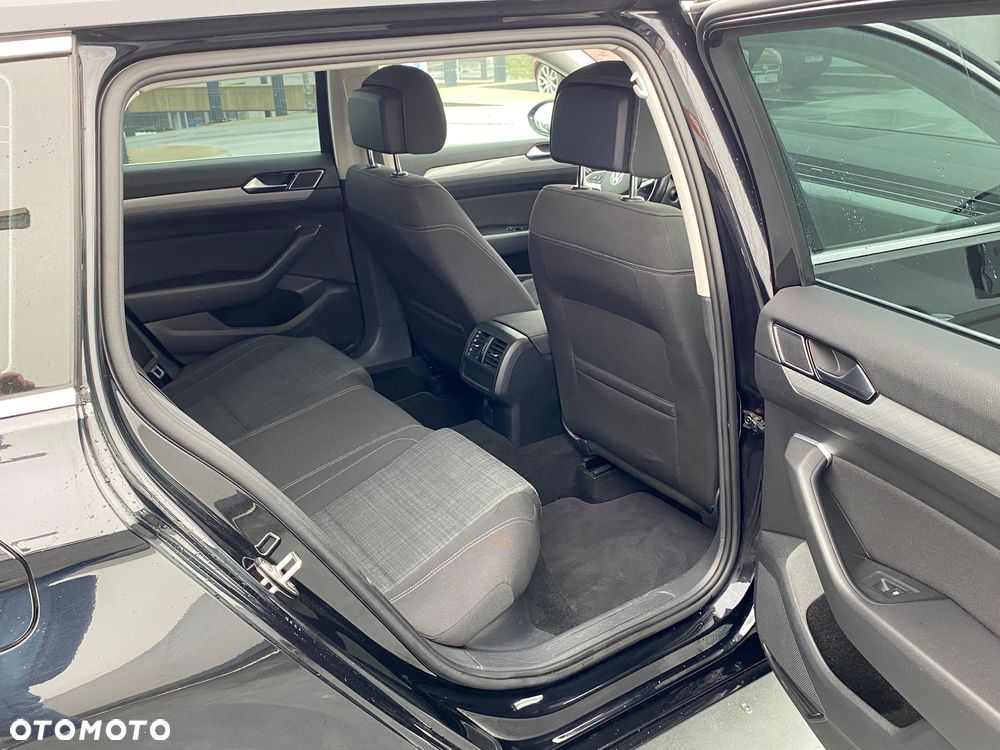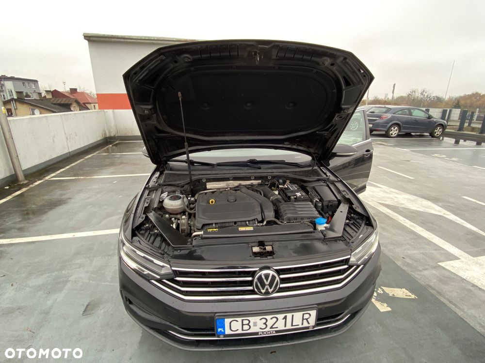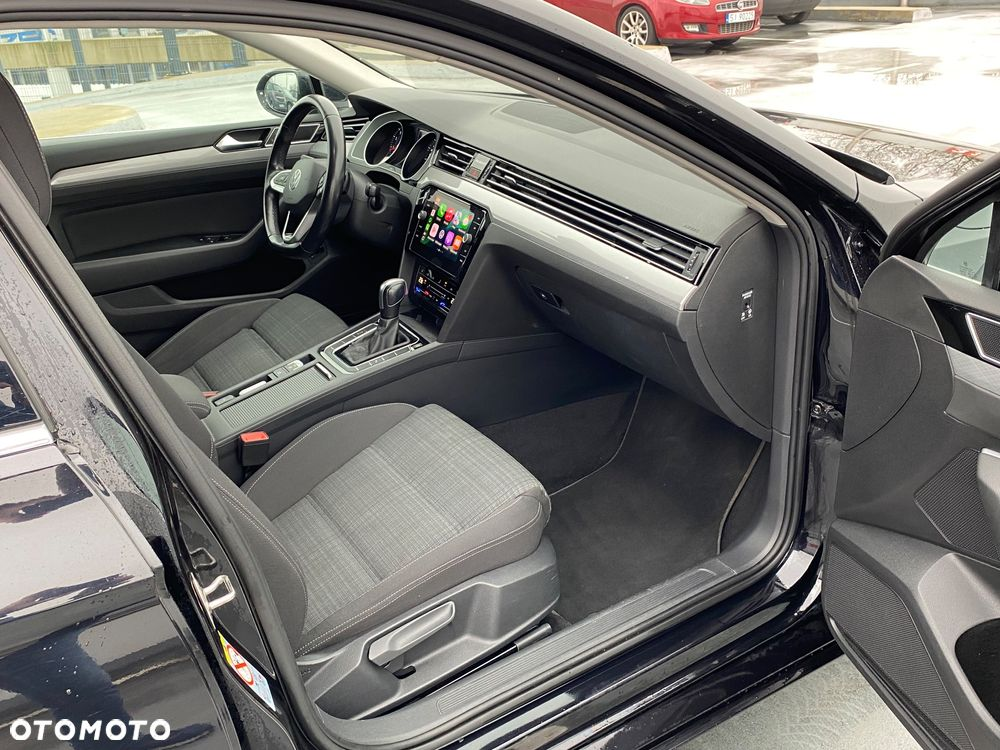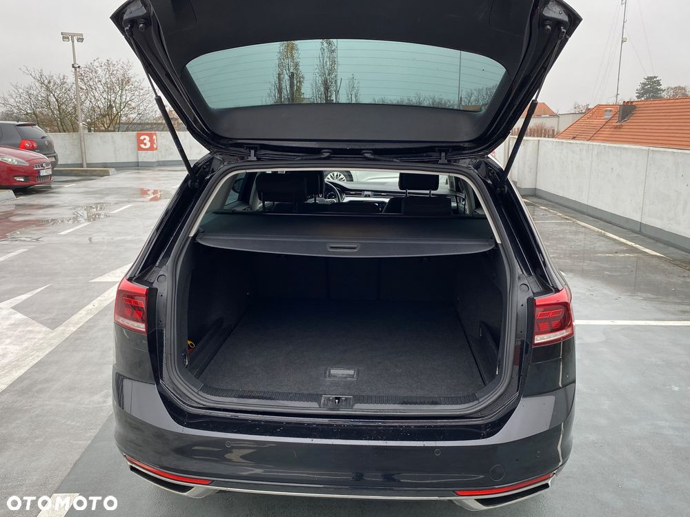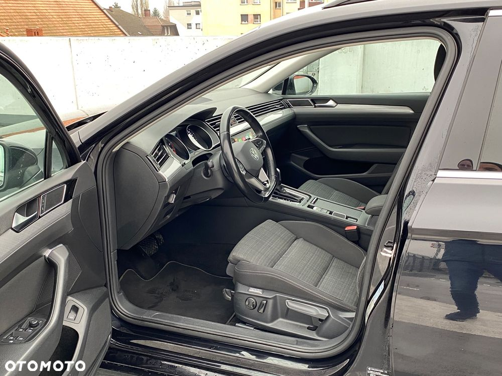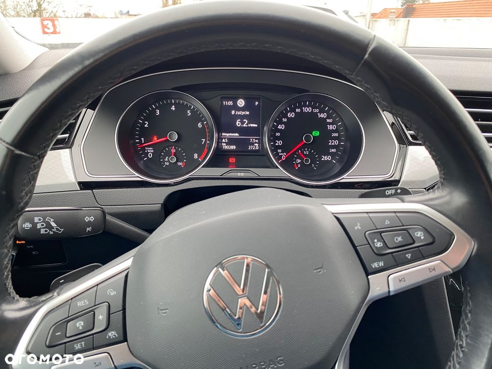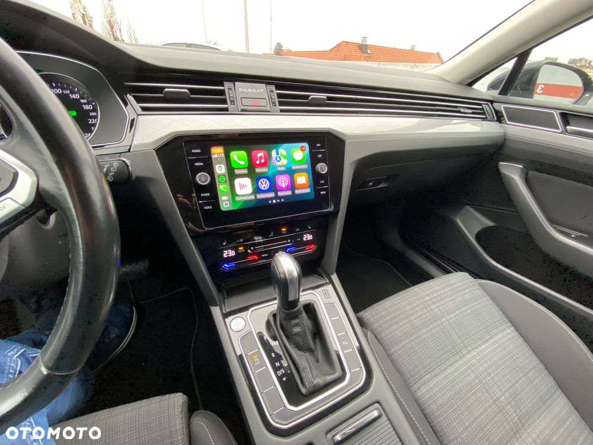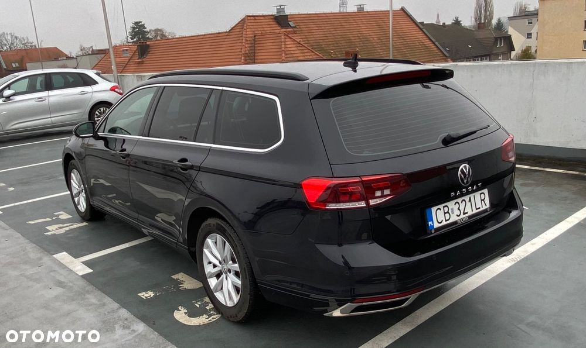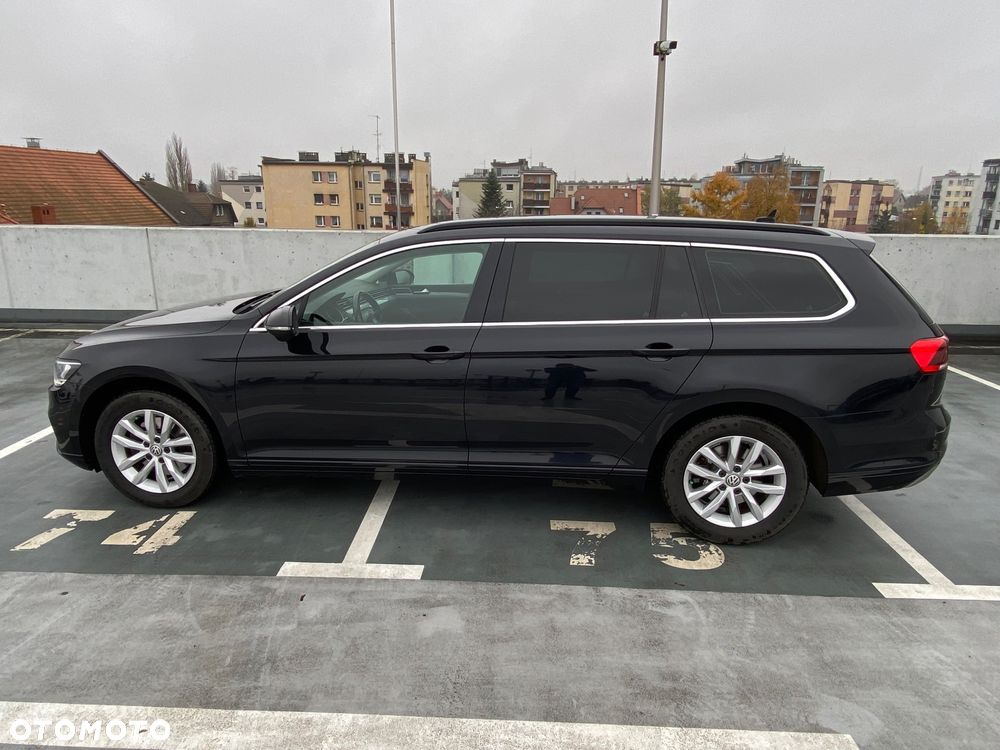